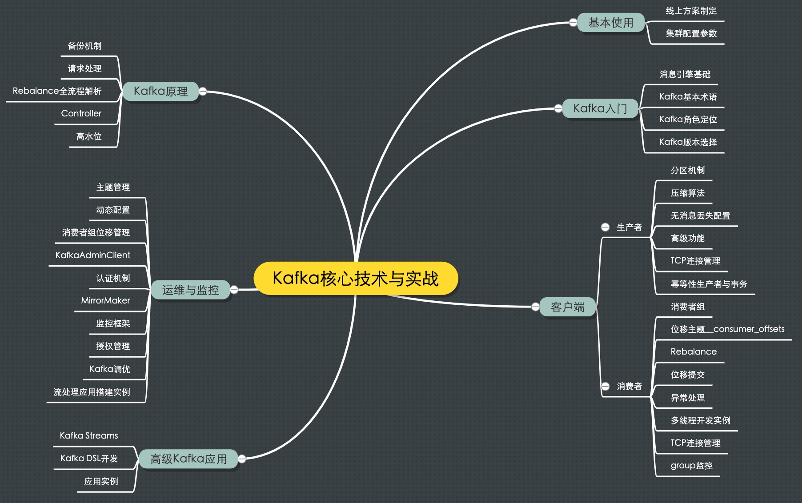
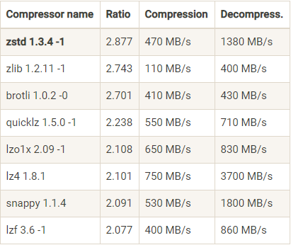

Kafka
目录
1 MindMap

2 Main Purpose
- 削峰填谷：缓冲上下游瞬时突发流量，使其更平滑
- 提供生产者消费者 API
- 降低网络传输和磁盘存储开销
- 拥抱错误，提供副本冗余机制
- 实现高伸缩性架构
3 版本
0.8: 引入副本0.9: Producer API 在这个版本中算比较稳定了；引入 kafka connect 组件0.10: 引入 kafka stream；0.10.2.2 引入新版本 Consumer API0.11: 引入幂等性 Producer API 以及事务（Transaction） API；消息格式做了重构；推荐 0.11.0.3 以上1.0~和~2.0: kafka stream 改进，直接使用 2.0
4 重要配置参数
4.1 Broker 端
- log.dirs: 指定了 Broker 需要使用的若干个文件目录路径，可指定不同磁盘路径，提高吞吐量，并提供 Failover 功能
- zookeeper.connect: 与其他应用共用时指定 chroot, 例：
zk1:2181,zk2:2181,zk3:2181/kafka - listeners, advertised.listeners: 告诉外部连接者要通过什么协议访问指定主机名和端口开放的 Kafka 服务 格式： <协议名称，主机名，端口号>，可自定义协议
4.2 Topic 全局配置
- auto.create.topics.enable: 是否允许自动创建 Topic
- unclean.leader.election.enable: 是否允许 Unclean Leader 选举，配 false, 坚决不让那些落后太多的副本竞选 Leader
- auto.leader.rebalance.enable: 是否允许定期进行 Leader 选举，也配 false，理由换 Leader 代价太高
- log.retention.{hours|minutes|ms}
- log.retention.bytes: 指定 Broker 为消息保存的总磁盘容量大小
- message.max.bytes: 控制 Broker 能够接收的最大消息大小，可设置大一点，不会耗费额外磁盘空间
4.3 Topic 自身配置
会替换全局配置, 使用脚本：kafka-topics.sh, kafka-configs.sh
- retention.ms
- retention.bytes
4.4 JVM 参数
- Heap Size: 环境变量 KAFKA_HEAP_OPTS。建议 6GB，Kafka Broker 在与客户端进行交互时会在 JVM 堆上创建大量的 ByteBuffer 实例，默认 1GB 略少
- GC 设置：环境变量 KAFKA_JVM_PERFORMANCE_OPTS 。 如果 CPU 资源非常充裕，建议使用 CMS 收集器，启用方法是指定-XX:+UseCurrentMarkSweepGC；否则使用吞吐量收集器，开启方法是指定-XX:+UseParallelGC； JAVA8 直接使用默认 G1 收集器，在没有任何调优的情况下，G1 表现得要比 CMS 出色，主要体现在更少的 Full GC，需要调整的参数更少等，所以使用 G1 就好了。
export KAFKA_HEAP_OPTS=--Xms6g --Xmx6g export KAFKA_JVM_PERFORMANCE_OPTS= -server -XX:+UseG1GC -XX:MaxGCPauseMillis=20
4.5 操作系统参数
- ulimit: 通常情况下将它设置成一个超大的值是合理的做法，比如 ulimit -n 1000000。不设大点会经常出现“Too many open files”错误
- 文件系统：ZFS>XFS>ext4
- swap：设置成 0，当物理内存耗尽时，操作系统会触发 OOM killer 这个组件，它会随机挑选一个进程然后 kill 掉，根本不给用户任何的预警。
设置成一个比较小的值，当开始使用 swap 空间时，你至少能够观测到 Broker 性能开始出现急剧下降，从而给你进一步调优和诊断问题的时间。设置成 1 即可
- 页缓存落地间隔：默认 5 秒。一般情况下我们会认为这个时间太频繁了，可以适当地增加提交间隔来降低物理磁盘的写操作。
Kafka 在软件层面已经提供了多副本的冗余机制，因此这里稍微拉大提交间隔去换取性能还是一个合理的做法
5 Producer
5.1 分区策略
- 默认 Round-robin 策略： 非常优秀的负载均衡表现
随机策略
List<PartitionInfo> partitions = cluster.partitionsForTopic(topic); return ThreadLocalRandom.current().nextInt(partitions.size());
按消息键保序策略
List partitions = cluster.partitionsForTopic(topic); return Math.abs(key.hashCode()) % partitions.size();
自定义分区策略：重写 Partitioner 接口 partition 方法实现，签名
int partition(String topic, Object key, byte[] keyBytes, Object value, byte[] valueBytes, Cluster cluster);
5.2 压缩算法
- Producer 端压缩、Broker 端保持、Consumer 端解压缩
- 可选算法： GZIP、Snappy、LZ4、Zstandard(简写 zstd，超高压缩比)

5.3 消息可靠性保障
- 最多一次（at most once）：消息可能会丢失，但绝不会被重复发送。
- 至少一次（at least once）：消息不会丢失，但有可能被重复发送。
- 精确一次（exactly once）：消息不会丢失，也不会被重复发送。
Kafka 默认 at least once，网络抖动会导致 Producer 重传；禁止 producer 重试则改为 at most once； 要实现精确一次，需用到幂等性（Idempotence）和事务（Transaction）机制。
幂等性
最大优势在于我们可以安全地重试任何幂等性操作，反正它们也不会破坏我们的系统状态
- 0.11 版本后可指定幂等性 Producer：
props.put(ProducerConfig.ENABLE_IDEMPOTENCE_CONFIG， true), Kafka 会自动做消息的重复去重，实现细节：空间换时间，消息多保存一些字段- 只保证分区上的幂等性
- 只保证单会话的幂等性，即进程重启，幂等性保证就消失了
- 解决以上问题需使用事务 Producer
事务
性能相比幂等性 Producer 更差。 启用方法： 开启 enable.idempotence = true。设置 Producer 端参数 transactional.id。最好为其设置一个有意义的名字。代码调整如下：
producer.initTransactions(); try { producer.beginTransaction(); producer.send(record1); producer.send(record2); producer.commitTransaction(); } catch (KafkaException e) { producer.abortTransaction(); }
Consumer 端需要设置 isolation.level 参数为 read_committed
5.4 无消息丢失配置
- 不要使用 producer.send(msg)，而要使用 producer.send(msg, callback)
- 设置 acks = all，即等所有副本确认才算确认
- 设置 Producer 的 retries 为一个较大的值
- 设置 Broker 参数 unclean.leader.election.enable = false
- 设置 replication.factor >= 3，多冗余
- 设置 Broker 参数 min.insync.replicas > 1，至少写入多少个副本才算提交
- 确保 replication.factor > min.insync.replicas。 推荐设置成 replication.factor = min.insync.replicas + 1
- 确保消息消费完成再提交。即 Consumer 不启用 enable.auto.commit
6 Installing
See https://github.com/wurstmeister/kafka-docker
- Change environment
KAFKA_ADVERTISED_HOST_NAME
6.1 Verifying
kafka-topics.sh --create --zookeeper localhost:2181 --replication-factor 1 --partitions 1 --topic test kafka-topics.sh --zookeeper localhost:2181 --describe --topic test kafka-console-producer.sh --broker-list localhost:32772 --topic test kafka-console-consumer.sh --bootstrap-server localhost:32772 --topic test --from-beginning
6.2 Choose Number of Partitions
Book REF: HOW TO CHOOSE THE NUMBER OF PARTITIONS
suggestion
If you have some estimate regarding the target throughput of the topic and the expected throughput of the consumers, you can divide the target throughput by the expected consumer throughput and derive the number of partitions this way. So if I want to be able to write and read 1 GB/sec from a topic, and I know each consumer can only process 50 MB/s, then I know I need at least 20 partitions. This way, I can have 20 consumers reading from the topic and achieve 1 GB/sec. If you don’t have this detailed information, our experience suggests that limiting the size of the partition on the disk to less than 6 GB per day of retention often gives satisfactory results.
6.3 Log Configuration
log.retention.ms: The most common configuration for how long Kafka will retain messages is by time.log.retention.bytes: Another way to expire messages is based on the total number of bytes of messages retained.log.segment.byteslog.segment.msmessage.max.bytes: The Kafka broker limits the maximum size of a message that can be produced.